|
|
|
lornaland.co.uk Holidays Photo Gallery Lornaland Natter USA 2005 Journal Menu...New YorkBoston Cooperstown Buffalo Las Vegas Death Valley Yosemite National Park San Francisco San Simeon Los Angeles San Diego New York Pictures |
New York2nd - 5th September 2005Friday 2nd September 2005
The Time: 9.00am
We arrived at the airport at 07.26 after out RailAir trip and we finally checked in about an hour
later. I was randomly chosen to be a guinea pig and had a body scan, part of their new security
procedures which was fun and actually made me whiz through security way before Dan.
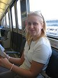
11.00 (UK Time)- We finally took off after a bit of a delay. Luckily, we're still getting fed! ... by Dan 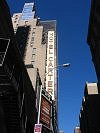Touched down in JFK to find that New York is hotter than it looks on TV, probably cos they shoot everything through a blue filter. Immigration took forever as we were the second of two jumbo's to arrive but we got through easily enough. After some initial public transport fears, we took the "A" train direct to 42nd Street Port Authority Terminal, which happened to be a matter of yards from our hotel. Taking the "A" train through Queens and Brooklyn was not a little scarey. I'd use the term "white face in Harlem" but we got off before Harlem. You know what I mean anyway. 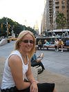 The Carter Hotel is so utterly crap that it's funny! The room is basic with one boarded up window in the bathroom and variois other complaints which Lorna will probably list later. i chased a cockroach into the lift. 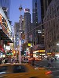 ... by Lorna After a shower and a little nap, we headed out for our first real glimpse of NYC. We decided to take a wander to Times Square which according to the guide book wasn't too far away. After walking for a while, we realise we've been walking in completely the wrong direction when we end up at the entrance to Central Park, completely missing Times Square. On our return to our hotel, after a very nice "create your own stir fry" we find that our hotel is right in the middle of Times Square, we should have turned right instead of left! With jet lag and setting in, we were in bed by 20.00 and asleep soon after. Saturday 3rd September 2005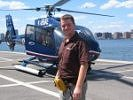Our alarm was set for an early 08.30 start, but after falling asleep early last night, we were up at 07.30. We left the hotel in search of breakfast which we found at the end of the street. 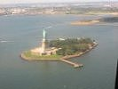After breakfast, we headed on a leisurely stroll to the Liberty Helicopters heliport but arrived very early. Luckily the wait wasn't too bad and soon it was our turn. After watching the safety video, 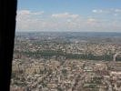and being issued our "flotation devices" we were onboard. We were told that due to weight distributions we may not be sat with people in our party, and while Dan was put in the back row, I took up prime position in the front! :o) 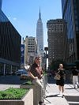 The trip was fantastic. It was weird being in a helicopter, really different to a plane. The views were fab and all too soon we were landing again. Dan had enjoyed his birthday present :o) 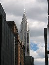 We headed off in search of some NYC sights, firstly stopping off in Macy's for a coffee and then passing the Empire State Building. We then walked along Fifth Avenue for some window shopping. I did manage to drag Dan into Tiffany's and saw lots of lovely jewels but sadly we couldn't afford any of them. We made a detour to see the Rockefeller Center, Chrysler Building and Grand Central Station to eat some yummy cheesecake at Junior's as we'd heard it was the best in NYC. Saying as it was a food court, we weren't sure what to expect but it turned out to be very yummy indeed. 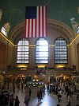 From Fifth Avenue, we wandered along to Bloomingdales so I could purchase some Clinique make-up (and get a "little brown bag") and then we had a little rest in Central Park, next to the zoo. 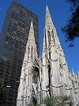 We walked back to the hotel down Broadway and through Times Square and arrived back at the hotel at 19.00. A very busy and tiring day! ... by Dan I am a big lover of cheesecake, which is why I have to add that during our visit to Grand Central Station we went to "Junior's Cheesecake". Being an Englishman, I wasn't expecting much from a food court in a station, but it turned out to be fantastic. I had strawberry, Lorna had chocolate. We've walked a good few miles today and my feet are killing me. Looking forward to a nice hot shower before we head out to eat. We've deiced to head to restaurant row tonight since it involves less walking thana trip to SoHo or suchlike. Might check out the "House of Brews" too! ... by Lorna We made it to the House of Brews! We wandered off to restaurant row on W46th Street which surprisingly enough was a row full of restaurants. Eventually, we decided on Bangkok House for a very tasty Chinese. Then it was onto the "House of Brews" for Dan to have his fix or real ale. I had a very yummy "Cosmo" type cocktail made with Berry Bacardi and served in a very funky glass. Sunday 4th September 2005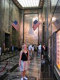 Another long and weary day! We walked over 6 miles in 9 hours and our poor feet are very sore. We were up at 07.30 and out of the hotel just before 09.00 in a determined effort to beat the queues at The Empire State Building. 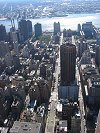We arrived at 09.15 and were sent through a maze of ropes to the ticket booths. We purchased our tickets at 09.24 but it was well after 10.00am by the time we arrived at the top, and that was without much queuing! The top was very crowded but the view was fantastic. 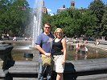After lots of photos we headed back down and were amazed that the queue to enter the building was stretching round the block. We were very glad we'd made the early start. We headed across the road to Macy's for a coffee and to plan the rest of the day. After coffee, we headed straight into the nearest subway and headed off to Greenwich Village and Soho. It was very hot so we popped into a bar where Dan sampled some Brooklyn Lager. We carried on wandering through Little Italy, Chinatown and the Lower East Side before catching the subway up to 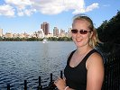Central Park (though we ended up on a express subway headed straight to The Bronx! We managed to get back to where we wanted to be safely and on entering the park, we stopped for a hot dog and a pretzel. The park was 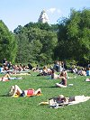packed but we wandered off in the general direction of the boating lake and we got to see the famous joggers round the Jackie Onassis reservoir. When we finally got to the boating lake, the queue for boats was huge so we decided to give it a miss and headed back home. For dinner, we were too tired to head to Greenwich Village as had been the plan so we decided to be tourists for the night and headed off to Times Square for a cheapo slice of pizza and a beer before we passed out in bed. Monday 5th September 2005 (Labor Day... by Dan)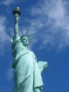 Yet another early start, this time to beat the queues at the ferry for the Statue of Liberty and Ellis Island. Yet again it paid off and we were on a boat within half an hour of arriving in Battery Park. We managed claim a good spot on the ferry and finally got a chance to see the famous view of NYC from the water. Tickets to go up the statue had already sold out so our tour of Liberty Island was conducted at ground level. The weather was perfect for photos and sunburn and Dan managed to get both! 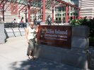The ferry then took us to Ellis Island, which was the processing station for immigrants to the USA until the 1950's. Immigrants in the last 1800's and early 1900's were subjected to bizarre intelligence and health tests before being allowed to get the ferry to Manhattan. The museum was quite interesting but I imagine more so for people whose ancestors had actually been immigrants (I did find some actually find some Metcalfe's from England in the records!) 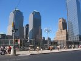 After jumping on yet another ferry we walked up from Battery Park to the Financial District in Lower Manhattan. We stopped for photos at the Stock Exchange before walking up to "Ground Zero". The size of the hole left after the Twin Towers is shocking, it really is vast. People hang around the area just trying to take it all in St Paul's Chapel over the road is a very sad place to visit. Missing person's posters still hang on the walls and there are Fire Brigade badges from all over the world displayed. 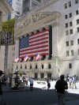 The next stop on our tour was the Brooklyn Bridge. We didn't intend to walk over it, it just sort of happened! It's a long walk over the bridge on a metal grating which allows a view down (scary to Dan) The views from the bridge are fantastic and the bridge itself is beautiful. On our arrival in Brooklyn, we searched around for a subway station before finding a boardwalk by the river from which the river taxi leaves from. Nine white limos were lined up here and nine Japanese bridal parties were being photographed and filmed by nine sets of photographers. A very strange sight! 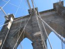$5.00 each got us back across the river and we made our way back to the hotel, very tired! 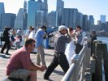 Tonight's dining experience was provided by the Yatagan Kebab House (as recommended to us) and we weren't disappointed. We popped next door to Slane for a few beers and cocktails and we were asleep as soon our head hit the pillows. |